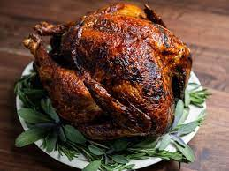

Deep Fried Turkey

Learn how to deep-fry turkey for Thanksgiving without all the fuss. This deep-fried turkey recipe is simple — no injecting, no marinades, no complicated rubs. If you like a more traditional tasting turkey, this is the one for you!
Ingredients
- Oil: Peanut oil is perfect for frying, as it has a high smoke point and a neutral flavor.
- Turkey: This recipe calls for a 10-pound turkey. If your bird is larger or smaller, you'll have to adjust the cooking time.
- Seasonings: This deep-fried turkey recipe is simply seasoned with salt and pepper. You can add more seasonings to taste.
Directions
- Prep: Make sure your stockpot or fryer is located outdoors in a safe area. Heat the oil to 350 degrees F. Cut any neck skin away from the thawed bird and make sure the neck hole is at least 1-inch in diameter.
- Season: Use a paper towel to pat the turkey dry. Season liberally with salt and pepper on the inside and outside.
- Fry: Place the turkey, neck-side down, in a drain basket. Gently lower the turkey into the hot oil until it's completely covered. Continue frying until the turkey is cooked through. Remove from the oil, drain, and allow to rest for 15 minutes before carving.